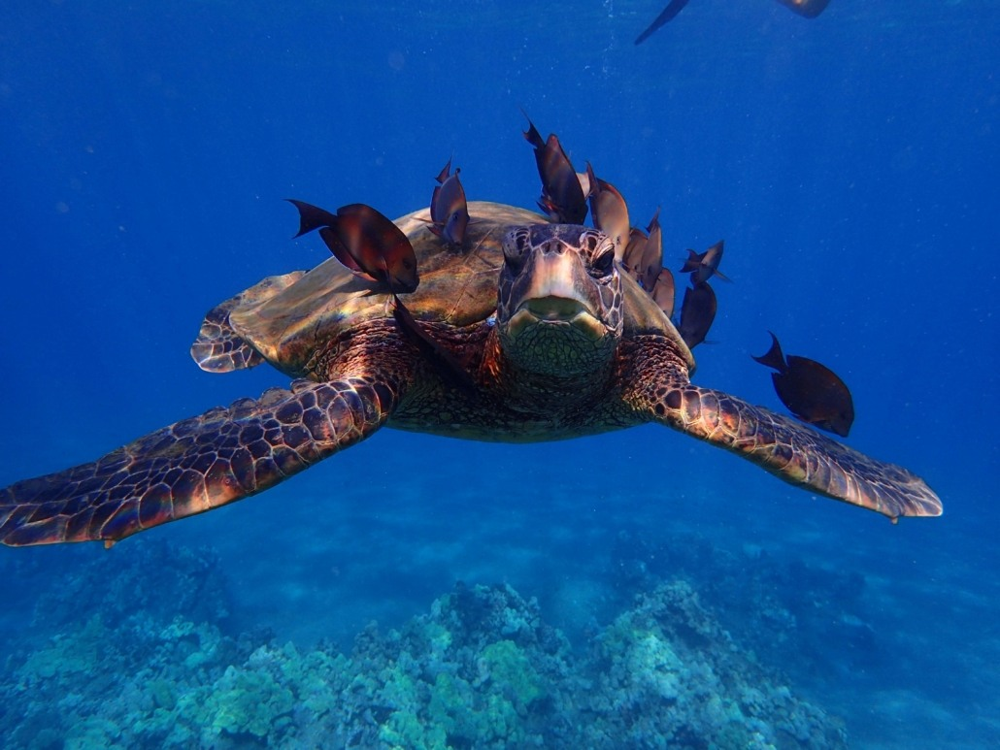
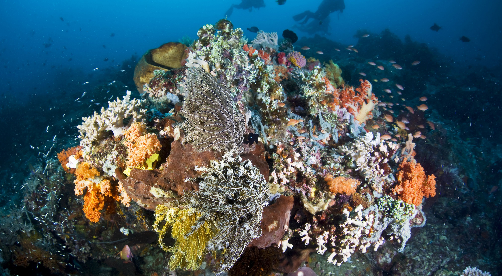

The
HLA Initiative
Who we are
A community of sailing cruisers with a passion for preserving the oceans and marine life that we love so much. Sea turtles, coral reefs, and the like are precious and valuable to our planets health and our enjoyment of our beautiful home.
Sea turtles are just one example of marine life that often mistake floating plastic for food or prey. When ingested, plastic can lead to health issues and even fatality for the animal.
While it takes many years, and in some cases several decades, plastic does not decompose completely. Instead, it breaks down into tiny pieces called "micro-plastics" that can harm tiny marine life and the corals in our reefs.
What it's all about
Our desire is to create awareness that can lead to changes in habits in society. We realized that it doesn't take a miracle at the individual level. Just as shear size of our population causes issues such as these to snowball, we can make it snowball in a positive direction by simply making an effort and taking small steps. If every single one of us starts out by making just one change or creating just one new habit... If each of us does our own small part, we can literally change the world.
Click here to understand more and see some small things that make a big difference!Who's doing it?
Absolutely anyone and everyone that enjoys the beauty of our oceans and their inhabitants.
Click Here to see a some people that we admire that are already making a difference